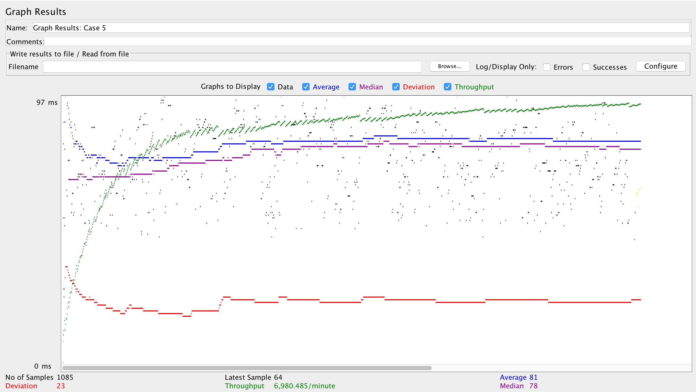

| Single-instance version cases | Graph Results Screenshot | Average Query Time(ms) | Average Search Servlet Time(ms) | Average JDBC Time(ms) | Analysis |
| Case 1: HTTP/1 thread | 54.672 | 7.099 | 6.3 | Instance is optimized with prepared statements and connection pooling. This is the best version. | |
| Case 2: HTTP/10 threads | 92.593 | 15.642 | 7.902 | Using 10 threads as opposed to 1 in case 1. All three averages are longer than case 1 because there are more searches happening at the same time. | |
| Case 3: HTTPS/10 threads | 157.368 | 15.676 | 8.858 | Using HTTPS is slower than HTTP because when making a request using HTTPS, a handshake is made to verify the authenticity of the request (extra step to be made when using HTTPS). This handshake incurs some overhead resulting in a somewhat high number for Average Query Time. TS and TJ times didn't change much compared to case 2 as to be expected. | |
| Case 4: HTTP/10 threads/No prepared statements | 122.378 | 18.746 | 9.141 | Instance uses no prepared statements. Average time spent for all three measurements are higher compared to case 2. This is to be expected since a new statement has to be created for every search and statements aren't pre-compiled like prepared statements are. This proves how important prepared statements are in helping optimize our system. | |
| Case 5: HTTP/10 threads/No connection pooling |  | 82.949 | 14.143 | 10.631 | Instance has no connection pooling. The time averages confirm our expectations of being slower. Since there is no connection pooling, the average spent doing a JDBC query is longer since a new connection has to be established for every search. This proves how important connection pooling is in helping optimize our system. |
| Scaled version cases | Graph Results Screenshot | Average Query Time(ms) | Average Search Servlet Time(ms) | Average JDBC Time(ms) | Analysis |
| Case 1: HTTP/1 thread | 79.761 | 31.287 | 35.732 | No load balancing used here since it is only using 1 thread. The measurement times for all the cases in this scaled-version are higher here than the single-instance because... | |
| Case 2: HTTP/10 threads | 430.11 | 46.736 | 53.727 | Load balancing used here because there are 10 threads. The query workload is distributed evenly between the master and slave instances (confirmed by checking log files and Tomcat sessions). However, the time is really high because... | |
| Case 3: HTTP/10 threads/No prepared statements | 444.015 | 40.604 | 52.926 | No prepared statements used. Average query time is slower than case 2 as expected because statements aren't pre-compiled like prepared statements are... | |
| Case 4: HTTP/10 threads/No connection pooling | 147.929 | 58.665 | 90.823 | No connection pooling used here. A new connection had to be made every time we access the database which explains the high TJ time(?)... |